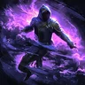
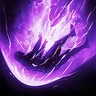
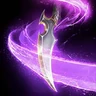
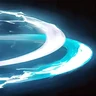
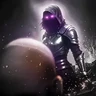
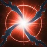

Прогресс прокачки
Отмечай шаги по ходу игры. Прогресс хранится в этом браузере, отдельно для каждого класса.
Обзор
Убийца — класс бурста с кинжалами. Рев зверя и другие удары накладывают на цель эмблемы, Взрыв эмблемы превращает их в урон и оглушение, а каждый крит может запустить Пронзание сердца. Основной урон идёт со спины, поэтому позиция решает.
Билд в одном предложении
Набирай эмблемы Рев зверя, взрывай их Взрыв эмблемы по откату, спамь Пронзание сердца на каждом крите — а в окно бурста Иллюзорный двойник снимает с Пронзания сердца перезарядку на 10 сек.
Гайд построен на глобальном билде TitanTheF (старт 1–45 и цель на 45+) из его таблицы прогрессии AION 2.
Глобальный 1 сезон: что меняется
Глобальные серверы открываются 5 октября 2026 (ранний доступ для Founder's Pack — с 30 сентября). Что это значит для Убийцы:
- 4 слота стигм, максимум 20. Глобальный набор держит две стигмы бурста на 20 и две утилитарные на 10.
- На старте нет скорости боя. Экипировка 1 сезона почти не даёт скорости атаки, поэтому простой макрос сейчас лучший; твоя скорость — Обет ускорения.
- Стигмы бурста — вручную. В начале перезарядки долгие: Иллюзорный двойник, потраченный на мобов, — это много потерянного урона по боссу.
- PvP: все стартуют в одинаковой слабой экипировке, меты ещё нет.
Активные скиллы и пассивки в глобальной и корейско-тайваньской версиях совпадают; у стигм нет ступени 25.
Скиллы
Три скилла качаются до 20, три до 16, остальные остаются на 12. Уровни дают очки навыков (10), Daevanion (14), кольца (16) и арканы (20).
-
Рев зверя 20Филлер без перезарядки: каждый удар накладывает эмблему и сокращает перезарядку Убийцы из сумрака.
- 8СКР умений +20%
- 8Чем меньше целей попадания, тем больше увеличение урона (макс. до 12%)
- 12Перезарядка [Убийцы из сумрака] -1s при попадании
Все специализации
- 8Затрата ОМ -20%
- 8СКР умений +20%
- 8Чем меньше целей попадания, тем больше увеличение урона (макс. до 12%)
- 12Перезарядка [Убийцы из сумрака] -1s при попадании
- 16Притягивание целей поблизости при использовании [Хлестания хищника]
-
Пронзание сердца 20Срабатывает на крите; на 16 каждый крит сбрасывает ему перезарядку — основа урона.
- 8Чем меньше целей попадания, тем больше увеличение шанса крит. удара (макс. до 20%)
- 12Гарантир. мультиудар при попадании
- 16Завершение перезарядки [Пронзания сердца] при попадании крит. ударом
Все специализации
- 8Поглощение 0.7% ОЗ
- 8Привязка 1 эмблемы на 10s при попадании
- 8Чем меньше целей попадания, тем больше увеличение шанса крит. удара (макс. до 20%)
- 12Гарантир. мультиудар при попадании
- 16Завершение перезарядки [Пронзания сердца] при попадании крит. ударом
-
Взрыв эмблемы 20Урон и шанс оглушения растут от числа эмблем; после взрыва остаются 2 стака, а на 16 перезарядка короче на 3 сек.
- 8Шанс мультиудара +50% при попадании
- 8Сохранение привязки 2 эмблем после [Взрыва эмблемы]
- 16Перезарядка -3 сек.
Все специализации
- 8Добавление эффекта вращения
- 8Шанс мультиудара +50% при попадании
- 8Сохранение привязки 2 эмблем после [Взрыва эмблемы]
- 12Длительность Оглушения +1 сек.
- 16Перезарядка -3 сек.
-
Быстрый разрез 16Базовая атака: восполняет ману и сокращает перезарядку Взрыва эмблемы.
- 8Восстановление ОМ +20%
- 12Перезарядка [Взрыва эмблемы] -1s при попадании
Все специализации
- 8Восстановление ОМ +20%
- 8Поглощение 0.7% ОЗ
- 8Шанс мультиудара +50% при попадании
- 12Перезарядка [Взрыва эмблемы] -1s при попадании
- 16Крит. удар, несмотря на блок и уклонение
-
Внезапное нападение 16+30% со спины; на 16 — ещё два применения подряд.
- 8Поглощение 3% ОЗ
- 16Непрерывное использование +2 р.
Все специализации
- 8Привязка 2 эмблем на 10s при попадании с тыла
- 8Поглощение 3% ОЗ
- 8Разрушение защитной оболочки при попадании
- 12Шанс 50% активировать [Удар торнадо] при попадании
- 16Непрерывное использование +2 р.
-
 Снятие шока 16Снятие контроля с лечением и большой стойкостью на 16.
Снятие шока 16Снятие контроля с лечением и большой стойкостью на 16.- 8При использовании [Снятия шока] восстанавливает 20% ОЗ
- 16Стойкость к урону в PvE +50% и стойкость к урону в PvP +25% во время действия Непреклонности
Все специализации
- 8Добавляет 2-ное комбо [Ураганный взмах]
- 8При использовании [Снятия шока] восстанавливает 1000 ОД
- 8При использовании [Снятия шока] восстанавливает 20% ОЗ
- 12Длительность Непреклонности +2 сек.
- 16Стойкость к урону в PvE +50% и стойкость к урону в PvP +25% во время действия Непреклонности
-

Убийца из сумрака 12Телепорт за спину цели и оглушение; +20% крит. урона на 5 сек.- 8Увеличение крит. урона +20% на 5s при попадании
- 8Шанс 50% наложить Запечатывание на 5s при попадании
Все специализации
- 8Длительность Оглушения +1 сек.
- 8Увеличение крит. урона +20% на 5s при попадании
- 8Шанс 50% наложить Запечатывание на 5s при попадании
- 12Шанс 50% взять врага в плен на 5s при попадании
- 16Смена на массовое умение
-

Бросок тени 12Сбивает с ног оглушённую цель и лечит на 10%.- 8Поглощение 10% ОЗ
- 8Перезарядка -5 сек.
Все специализации
- 8Поглощение 10% ОЗ
- 8Привязка 3 эмблем на 10s при попадании
- 8Перезарядка -5 сек.
- 12Длительность Сбивания с ног +1 сек.
- 16Можно использовать на ослепленной цели
-

Удар торнадо 12АоЕ с большой дальностью.- 8Смена на урон по области
- 8Дальность атаки +16 м
Все специализации
- 8Шанс мультиудара +50% при попадании
- 8Смена на урон по области
- 8Дальность атаки +16 м
- 12Шанс Оглушения +20%
- 16Шанс 25% сбросить время перезарядки [Удара торнадо] при успешном уклонении
-

Ослепляющий разрез 12Рывок сквозь цель с ослеплением; на 12 — два применения.- 8Дальность атаки +6 м
- 12Непрерывное использование +1 раз
Все специализации
- 8Длительность Слепоты +2 сек.
- 8Дальность атаки +6 м
- 8Чем больше целей попадания, тем больше увеличение урона (макс. до 20%)
- 12Непрерывное использование +1 раз
- 16Шанс 50% развернуть и оглушить на 3s при попадании по ослепленной цели
-

Вторжение 12Уклонение → за спину цели; на 12 добавляет цепочку Dark Strike.- 8Дальность атаки [Вторжения] +10 м
- 12Добавление 2-ой комбинации [Скрытная атака]
Все специализации
- 8Восстановление 300 ОД при попадании [Вторжением]
- 8Дальность атаки [Вторжения] +10 м
- 8Разрушение защитной оболочки при попадании [Вторжением]
- 12Добавление 2-ой комбинации [Скрытная атака]
- 16Шанс Ослепления от [Вторжения] +20%
-

Неистовый шквал 12Только по целям под Оглушающей шкалой.- 8Замена на умение с возможностью перемещения
- 12Гарантир. мультиудар при попадании
Все специализации
- 8Поглощение 5% ОЗ
- 8Восстановление 120 ОМ при попадании
- 8Замена на умение с возможностью перемещения
- 12Гарантир. мультиудар при попадании
- 16Перезарядка всех умений -1s при попадании
Пассивки
| Пассивка | Уровень | Зачем |
|---|---|---|
| Удар с тыла | 20 | Урон со спины и усиление урона в PvE. |
| Стойка нападения | 18 | Усиление крит. урона; Обет ускорения умножает его. |
| Брешь в защите | 15 | −Защита цели после оглушения или Оглушающей шкалы. |
| Готовность | 14 | Доп. урон по целям ниже 30% ОЗ — фаза добивания. |
| Остальные | 10–12 | Шестое чувство, Нанесение яда, Внезапная атака 12; Выжидание момента, Контракт оживления 10. Попадание шоком — 1. |
Экипировка и статы
- Манастоуны: Атака, шанс крита, Точность — криты запускают Пронзание сердца.
- Какой тир экипировки добывать — станет ясно после глобального запуска.
Доски Daevanion
Daevanion поднимает скиллы с 10 до 14 и даёт статы. Каждый синий узел — +1 уровень своему скиллу. В таблице TitanTheF есть стартовый маршрут на 1–45 — бери эти узлы по ходу прокачки.
- Приоритет: синие узлы Рев зверя, Пронзание сердца, Взрыв эмблемы, затем оранжевые.
- Приоритет: синие узлы Убийца из сумрака, Ослепляющий разрез, Снятие шока.
- Ariel (PvE) на 45, а не Azphel.
- Azphel (PvP) на 45, и Triniel раньше.
Стигмы
-
Обет ускорения Ур. 20+20% скорости боя на 10 сек. (на 20 ещё +10%) и усиливает Удар с тыла и Стойку нападения.
- 5Затрата ОМ -20% во время действия умения
- 10Эффект [Удара с тыла] во время действия умения x1,5
- 15Эффект [Стойки нападения] во время действия умения x1,5
- 20+10% к СКР боя
Все специализации
- 5Затрата ОМ -20% во время действия умения
- 10Эффект [Удара с тыла] во время действия умения x1,5
- 15Эффект [Стойки нападения] во время действия умения x1,5
- 20+10% к СКР боя
-
Иллюзорный двойник Ур. 20Снимает перезарядку с Пронзания сердца и добавляет 20% твоего урона на 10 сек. — окно бурста. Тратить на босса, а не на мобов.
- 5Успешная активация негат. эффектов +10% во время действия умения
- 10На время действия эффекта: Увеличение крит. урона +20%
- 15Эффект [Выжидания момента] во время действия умения x1,5
- 20Шанс 50% нанести доп. урон при крит. ударе во время действия
Все специализации
- 5Успешная активация негат. эффектов +10% во время действия умения
- 10На время действия эффекта: Увеличение крит. урона +20%
- 15Эффект [Выжидания момента] во время действия умения x1,5
- 20Шанс 50% нанести доп. урон при крит. ударе во время действия
-
Стойка уклонения Ур. 10Гарантированное уклонение от сильного удара; на 10 — в движении.
- 5Непрерывное использование +1 раз
- 10Замена на умение с возможностью перемещения
Все специализации
- 5Непрерывное использование +1 раз
- 10Замена на умение с возможностью перемещения
- 15СКР движ. +20% на 3s при успешном уклонении
- 20Восстановление 10% ОЗ 1 раз при успешном уклонении
-
Кинжал тьмы Ур. 10Бросок на 20 м с замедлением; на 10 сбрасывается при убийстве — отлично для фарма.
- 5Добавление 2-ой комбинации [Преследование темного кинжала]
- 10Завершение перезарядки при уничтожении врага
Все специализации
- 5Добавление 2-ой комбинации [Преследование темного кинжала]
- 10Завершение перезарядки при уничтожении врага
- 15Гарантир. крит. удар при попадании
- 20Смена на массовое умение
-
Клык хищника прокачкаАоЕ, накладывающее сразу 5 эмблем — сильно на пачках при прокачке.
- 5Чем больше целей попадания, тем больше увеличение урона (макс. до 20%)
Все специализации
- 5Чем больше целей попадания, тем больше увеличение урона (макс. до 20%)
- 10Урон по шкале Ошеломления +50
- 15Увеличение урона в PvE +10%, Увеличение урона в PvP +5% на 10s при попадании
- 20Гарантир. крит. удар при попадании
Макрос и ротация
В AION 2 два разных инструмента:
- Линия на кнопке — несколько скиллов на одной кнопке панели. Нажатие применяет готовый скилл с наивысшим приоритетом, а в AION 2 наивысший приоритет у нижнего слота. Карточки показывают линии сверху вниз, как в игре.
- Встроенный макрос — пока ты держишь его клавишу, он по очереди нажимает кнопки панели и отменяет хвосты анимаций. Скиллы на перезарядке пропускаются.
1. Линии на кнопках
- 4 Рев зверя
- 3 Внезапное нападение
- 2 Удар торнадо
- 1 Взрыв эмблемы
Порядок как в игре, сверху вниз. 1 = высший приоритет — нижний слот.
Рев зверя набирает эмблемы; Взрыв эмблемы получает высший приоритет, как только готов. Эта же линия — встроенный макрос.
- 3 Бросок тени
- 2 Вторжение
- 1 Убийца из сумрака
Порядок как в игре, сверху вниз. 1 = высший приоритет — нижний слот.
Убийца из сумрака оглушает, затем Бросок тени сбивает оглушённую цель с ног.
2. Встроенный макрос
Поставь линию эмблем в макрос (10 мс) и повесь его на среднюю кнопку мыши. Это всё — TitanTheF держит его таким простым, потому что на старте нет скорости боя.
- 1Линия эмблемСКМ · 10 мс
3. Что нажимать на самом деле
- ДержатьБыстрый разрез на ЛКМ и макрос на СКМ.
- СпамитьПронзание сердца на Q — он срабатывает только на крите, поэтому жми постоянно.
- Макрос мышиИли пусть софт мыши крутит ЛКМ → СКМ → Q (10–30 мс) на одной кнопке-переключателе — TitanTheF использует Witchmana, но подойдёт любой софт мыши.
- ВручнуюИллюзорный двойник + Обет ускорения на боссе, Стойка уклонения от сильных ударов, линия оглушения, Кинжал тьмы на 2 при фарме.
Итог
- Скиллы: Рев зверя, Пронзание сердца, Взрыв эмблемы 20; Быстрый разрез, Внезапное нападение, Снятие шока 16; остальное 12.
- Стигмы: Обет ускорения 20, Иллюзорный двойник 20, Стойка уклонения 10, Кинжал тьмы 10.
- Пассивки: Удар с тыла 20, Стойка нападения 18, Брешь в защите 15, Готовность 14.
- Манастоуны: Атака, шанс крита, Точность.
Как сражаться во время прокачки
- Пачки: Клык хищника (5 эмблем) → Взрыв эмблемы → Удар торнадо; Кинжал тьмы сбрасывается при убийстве — тяни следующих.
- Элитки: зайди за спину → Внезапное нападение → Рев зверя набирает эмблемы → Взрыв эмблемы → Пронзание сердца на критах.
- Мана: Быстрый разрез восполняет ману — держи его на ЛКМ.
- Мало ОЗ: Бросок тени лечит; Снятие шока лечит, когда тебя законтролили.
Макрос на прокачке
Стартовая настройка TitanTheF работает с 1 уровня: линия эмблем во встроенном макросе на средней кнопке мыши, Быстрый разрез на ЛКМ и Пронзание сердца на Q. Для фарма мобов он использует Кинжал тьмы (2) и ПКМ. Ранний билд на 1–45: Быстрый разрез, Рев зверя, Взрыв эмблемы и Пронзание сердца до 12, всё остальное до 8.
- 4 Рев зверя
- 3 Внезапное нападение
- 2 Удар торнадо
- 1 Взрыв эмблемы
Порядок как в игре, сверху вниз. 1 = высший приоритет — нижний слот.
Источники
- TitanTheF — таблица прогрессии AION 2 (вкладка «Ассасин») — билды, панель, макрос, статы
- aion2t.com — стартовый и 45+ билды TitanTheF (уровни, специализации, стигмы, пассивки)
- questlog.gg — данные скиллов из глобального клиента
- Grobs — AION 2 Macro Guide — как работают линии и встроенный макрос
Сообщить об ошибке Откроет issue на GitHub для этой страницы